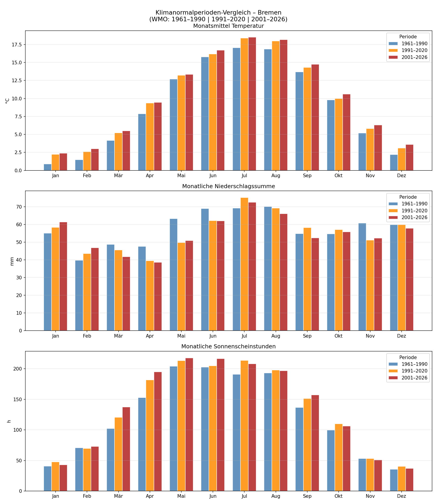
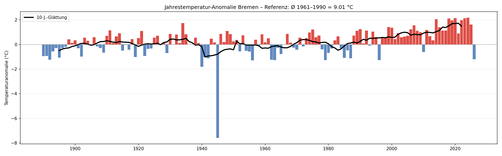
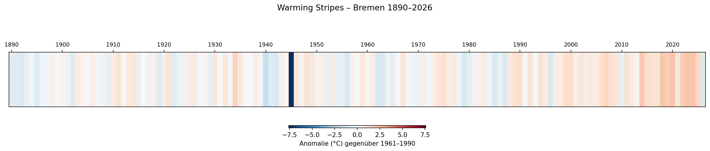
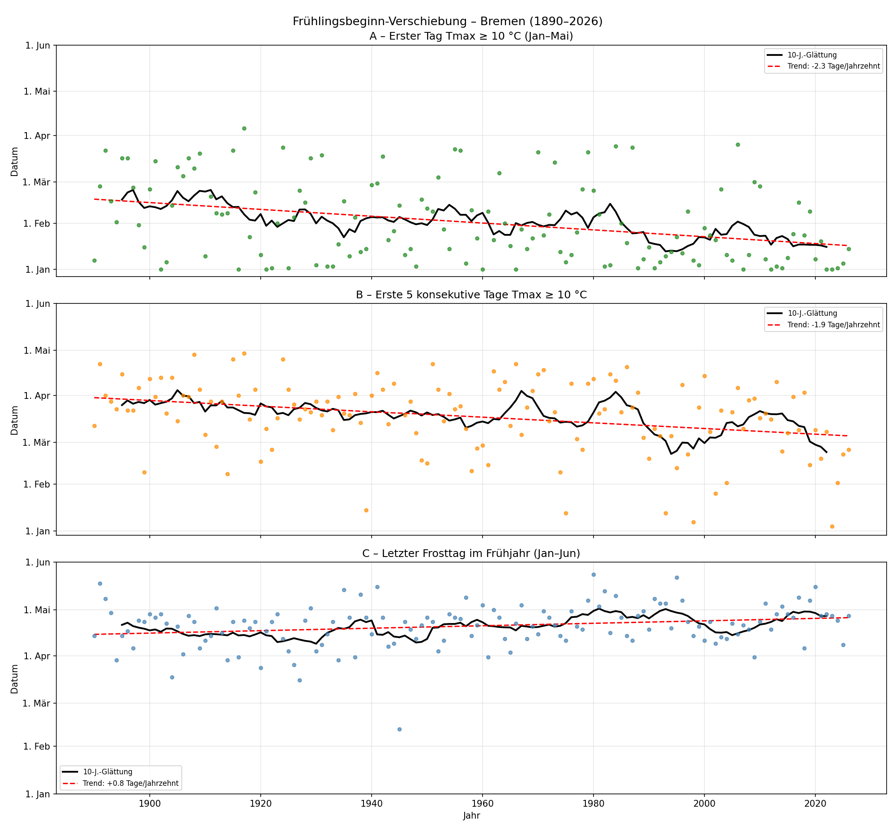
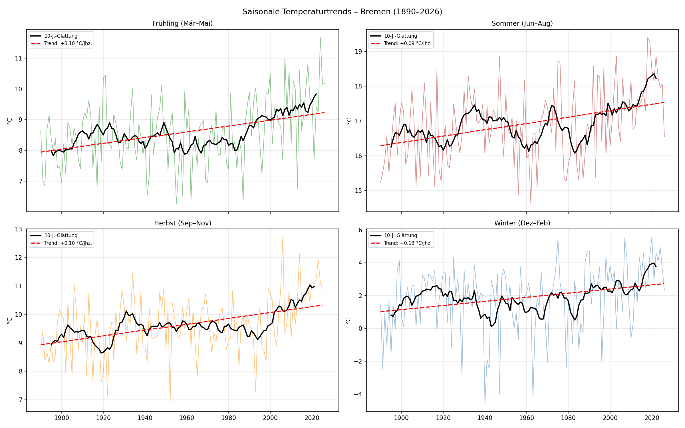
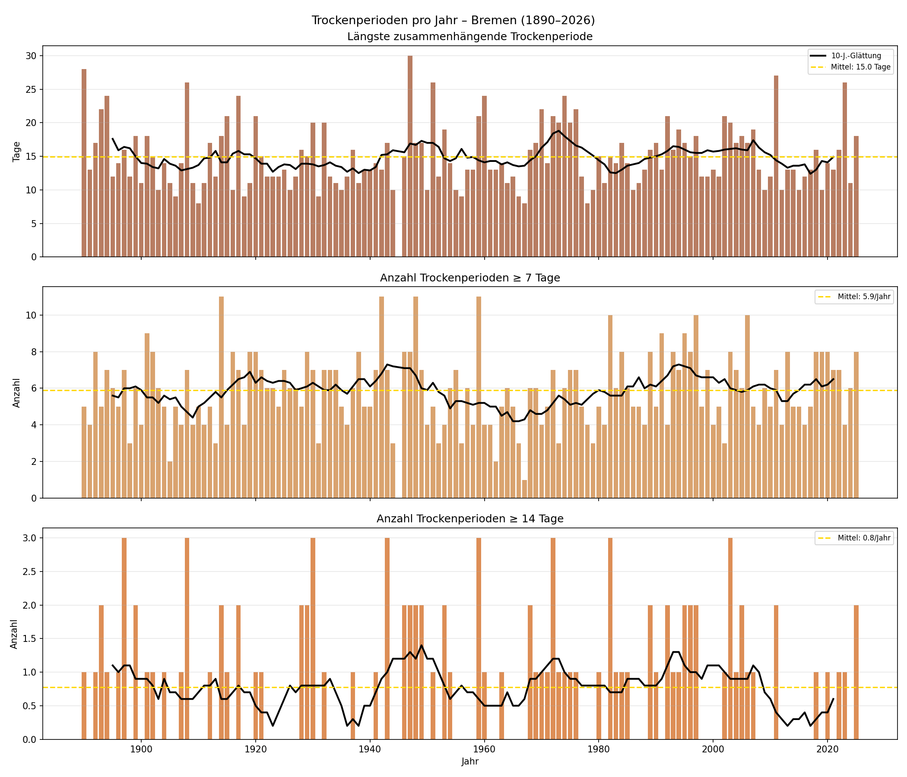
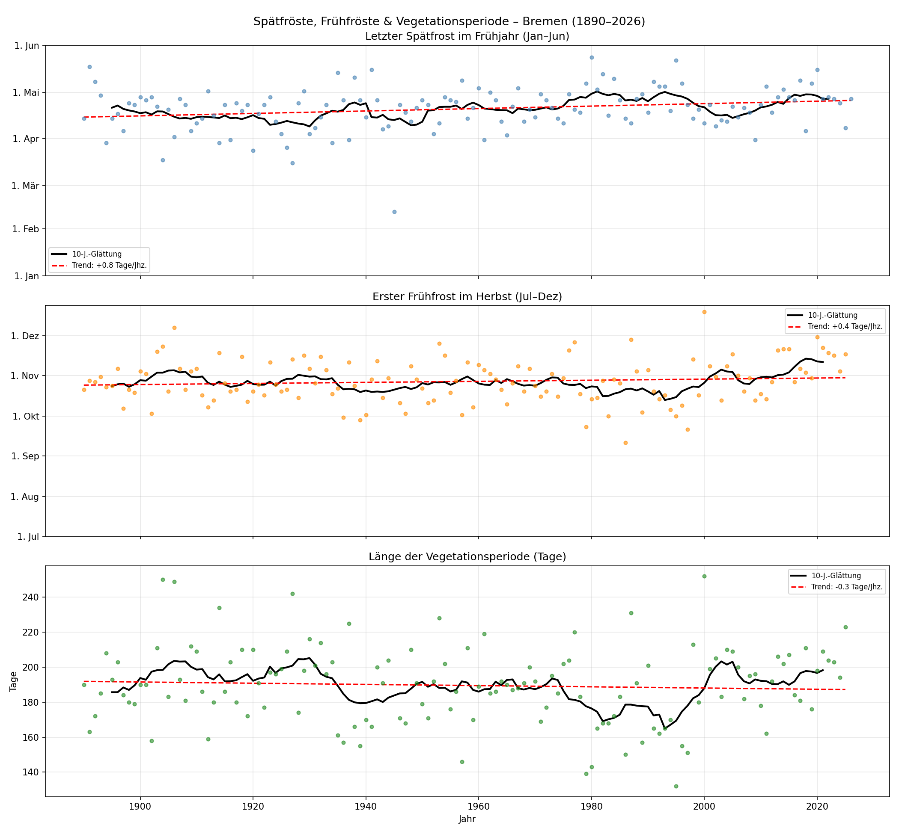
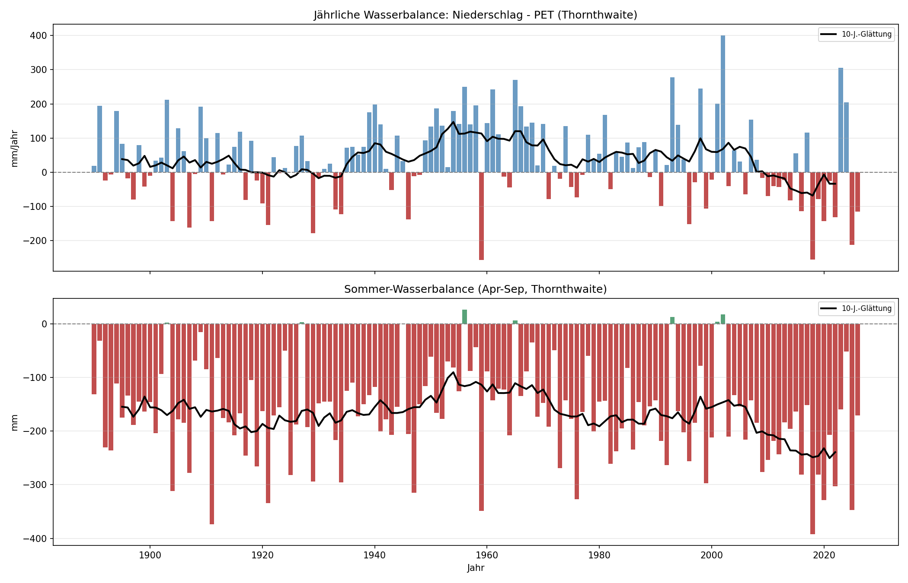

Executive Summary
Temperaturtrend
+0,10 C/Jahrzehnt
Anomalie seit 2020
+1,38 C
Fruehlingsbeginn
-2,30 Tage/Jhz
Wintertrend
+0,13 C/Jhz
Bericht fuer Veroeffentlichung: Datenauswertung, Klimasignale und 12-Monats-Umsetzungsprogramm fuer kommunale Anpassung.
| Modul | Thema | Kernindikator |
|---|---|---|
| 1 | Fehlwerte | Mittl. Fehlwertquote 24,3% |
| 2 | Temperaturtrend | +0,10 C/Jahrzehnt |
| 3 | Niederschlagstrend | +0,8 mm/Jahrzehnt |
| 4 | Sonnenscheintrend | +158,2 h/Jahrzehnt |
| 5 | Extremwerte | Tmax-Rekord 37,6 C |
| 6 | Saisonale Muster | Juli-Jan Delta 16,3 C |
| 7 | Korrelation | max abs(r)=0,98 (Tmean vs Tmax) |
| 8 | Hitzeextreme | Heisse Tage Trend +0,40 Tage/Jahrzehnt |
| 9 | Regenextreme | Tage >=20 mm Trend +0,04 Tage/Jahrzehnt |
| 10 | Klimanormalperioden | Juli 2001-2026 vs 1961-1990: +1,45 C |
| 11 | Anomalien | 2020+ Mittelanomalie +1,38 C |
| 12 | Fruehlingsbeginn | Trend -2,30 Tage/Jahrzehnt |
| 13 | Saisontrends | Sommer +0,09 | Winter +0,13 C/Jahrzehnt |
| 14 | Trockenperioden | Trend max. Trockenserie +0,01 Tage/Jahrzehnt |
| 15 | Vegetationsperiode | Trend -0,35 Tage/Jahrzehnt |
| 16 | Rekord-Zeitachse | Hitzerekorde gesamt 22, seit 1990: 1 |
| 17 | Wasserbalance | Trend -1,5 mm/Jahrzehnt, Mittel +36,5 mm |
| 18 | Persistenz | Lag1 Temp 0,946 | Lag1 Regen 0,198 |
| 19 | Heatmap/Jahresgang | Trend Jan +0,13 | Jul +0,09 C/Jahrzehnt |
1) Hitzevorsorge 2) Schwammstadt 3) Resilientes Stadtgruen 4) Klimafitte Gebaeude 5) Monitoring








index.html und Ordner output/).